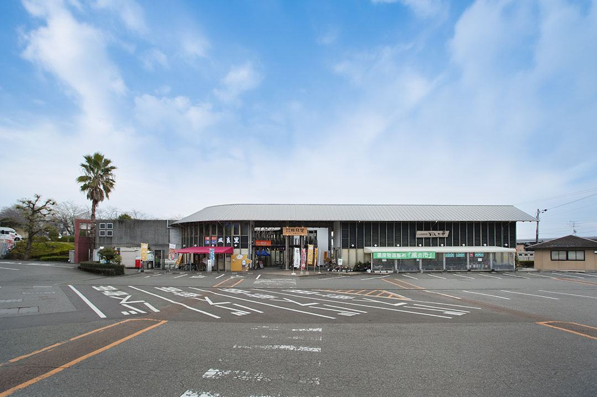

3レストラン風良里れすとらん ふらり
official
道の駅南国 風良里の2階にある食堂で、2026年4月28日にリニューアルオープンした。営業は平日11:00〜15:00（オーダーストップ14:30）、土日祝11:00〜16:00（同15:30）、定休日は火曜（火曜が祝日の場合は営業）。リニューアル後は土佐のブランド鶏3種と魚の出汁を合わせたラーメンを看板にしているが、藁焼き鰹のタタキ丼やしらす丼といった高知の丼も通年で出す。同じ2階には農家レストラン「まほろば畑」（地元の野菜料理のビュッフェ、大人1,500円・小学生1,000円、10:50〜12:20と12:40〜14:10の90分2部制）が併設されている。公式サイトのお知らせは2026年11月2日付が最新。
一皿:藁焼き鰹のタタキ丼（藁で炙った鰹のたたきを薬味とタレで丼に）、しらす丼（土佐湾のしらすをご飯に敷く）、土佐ブランド鶏と魚だしの塩ラーメン（リニューアル後の看板）
| 営業時間 | 平日 11:00〜15:00（オーダーストップ14:30）／土日祝 11:00〜16:00（オーダーストップ15:30） |
|---|---|
| 定休日 | 火曜日（火曜が祝日の場合は営業） |
| 住所 | 高知県南国市左右山102-1 |
| 予約 | 予約可。電話 088-880-8112（公式サイトに「お問い合わせ・ご予約」として記載）。 — ☎ 088-880-8112 ／ 公式サイト |
選定理由:南国ICを降りてすぐの道の駅にあり、鰹の藁焼きを丼で手軽に食べられる立ち寄り先として章に要るため（道の駅の食堂・農家レストランも可）。営業の根拠＝①店自身の公式サイト www.furari.com のレストランページに「【2026.11.2】レストラン風良里からのお知らせ」として11月3日の営業時間の案内が掲載（2026-11-10 取得）。②同ページに閉店・移転の掲示が無く、リニューアルは2026年4月28日の再開（営業中）であることを本文で確認。※公式SNSのアカウントは公式サイトに掲出されておらず読めていない。「<店名> 閉店／移転／リニューアル」の検索も、このターンの Web 検索の上限を使い切ったため未実施。 写真について＝公式サイトのレストランのページに載っているのは期間限定メニューの告知画像とメニュー表の画像だけで、料理・店内の実写が1本も無いため photo_urls は空にした（メニュー表の写真は使わない決まりのため）。外観は物部川DMO協議会（公式の観光団体）が掲載する道の駅南国 風良里の施設写真を使った。
Googleマップで開く
写真: 公式サイト・公式SNS・地域情報サイト等からの引用。出典は各カードに明記 / 外観: 出典ページ / 参照元: 公式サイト レストラン風良里（営業時間・定休日・2026.11.2 のお知らせ・リニューアル日）2026-11-10 取得 / 公式サイト 農家レストランまほろば畑（ビュッフェ料金・10:50〜14:10の2部制）2026-11-10 取得 / 物部川DMO協議会 食事施設（住所・電話・駐車場139台）2026-11-10 取得